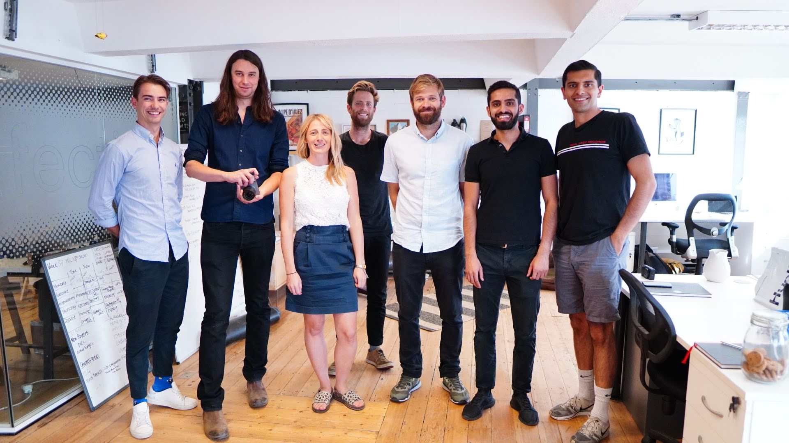
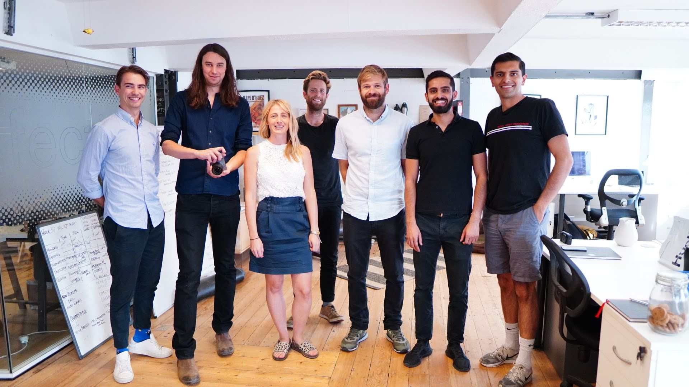

Technology for culture and creativity
Vishal is internationally recognised for applying data science and AI to the Cultural and Creative Industries

I'm CEO & co-Founder of the Alice Camera
As a creator, I wanted a professional camera more suited to my fast-paced content lifestyle. I co-founded a computational photography startup in London to build a novel AI camera for creators like myself to streamline workflow.
 

I create content at the forefront of data science for the arts and culture
Vishal has generated over 30,000 followers and 1 million views online around his niche as a Cultural Data Scientist.
I've published academic papers defining a new theory of cultural data science
Vishal has published conference papers and co-authored peer-review journals through his research work at The Bartlett, UCL.


I advise major cultural institutions on their data science strategy
Vishal was one of the first data scientists at Sotheby's auction house and has since advised international cultural institutions and governments on their data science strategy.
Together we can shape technology for culture and creativity
Hire me implement technologies with the goal of improving your cultural data science strategy.